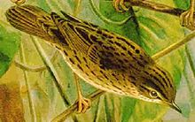
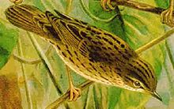

| Lanceolated Warbler | |
|---|---|
|  | |
| Conservation status | |
| Binomial name | |
| Locustella lanceolata (Temminck, 1840) |
| Lanceolated Warbler | |
|---|---|
|  | |
| Conservation status | |
| Binomial name | |
| Locustella lanceolata (Temminck, 1840) |
The Lanceolated Warbler (Locustella lanceolata) is an Old World warbler in the grass warbler genus Locustella. It breeds from northeast European Russia across northern Asia to northern Hokkaidō, Japan. It is migratory, wintering in south east Asia.
This small passerine bird is a species found in grassland with some thicker shrubby vegetation or trees, often close to water in bogs or wet clearings. Five eggs are laid in a nest in a tussock. This species is a rare vagrant to western Europe. One of the best places to see this skulking species as a vagrant is Fair Isle, Shetland.
This is a small warbler. The adult has a streaked brown back, whitish grey underparts, which have small lance-head like streaks, also found on the undertail. The sexes are identical, as with most warblers, but young birds are yellower below. Like most warblers, it is insectivorous.
This is a skulky species which is very difficult to see except sometimes when singing. It creeps through grass and low foliage.
The song is a monotonous mechanical insect-like reeling, something like Grasshopper Warbler, often given at dusk.

{kind=link}